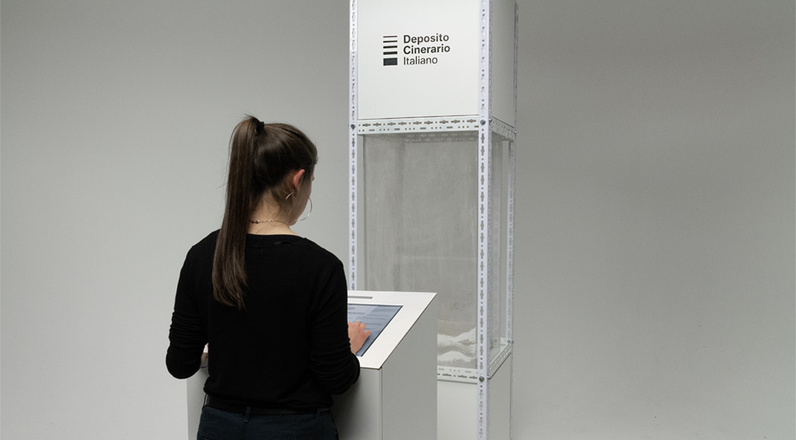
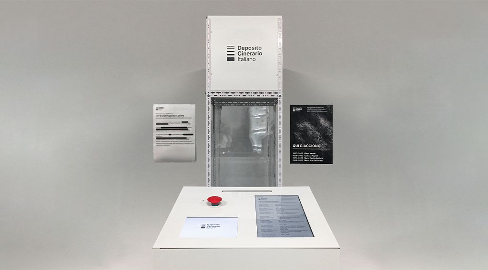
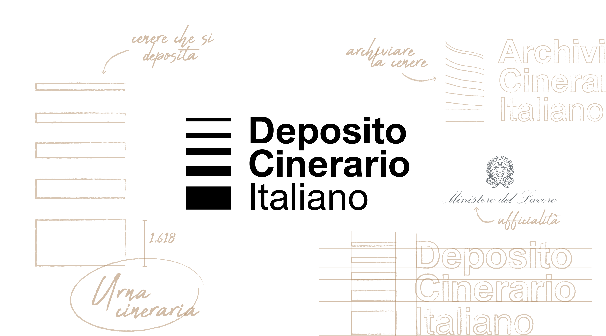
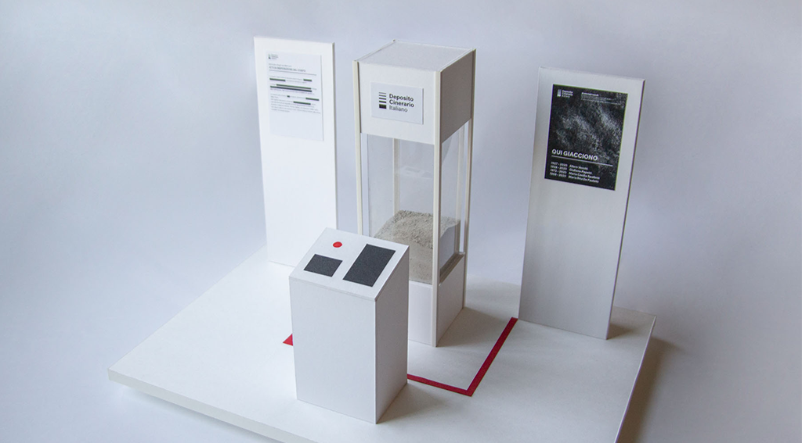
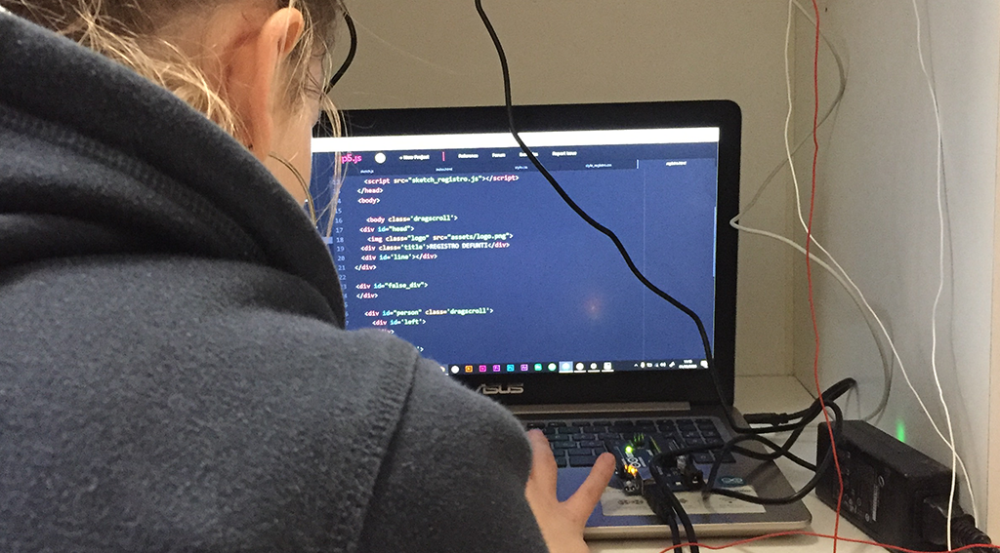
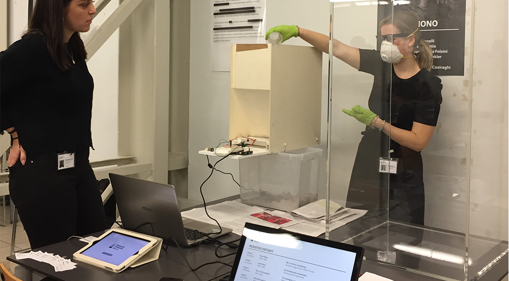
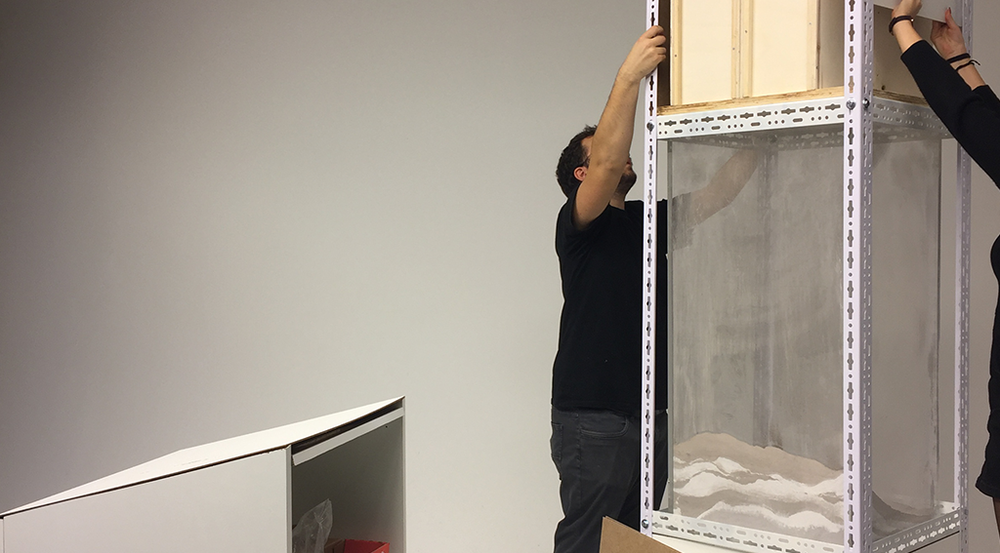

In Italy there are some laws that limit the disposition of the body after death, according to the dominant religious tradition.
Religions other than Catholicism are excluded. We used the Speculative Design process to make people feel what it means to have no choice in death.
We create a scenario where people are obliged to be cremated and where all the ashes are placed in a single urn iside the “Deposito Cinerario Italiano” (“Italian Cinerary Depot”).
The user is pushed to act as an agent for collective burial, where all deceased are equals and indistinct.


1. Research and concept definition
It’s not easy to make people think about death,
so we made a lot of research about Speculative Design and on
how to involve user’s emotions.
At the end we decided to create a
distopian world where users is a main part of the project.
2. The limits of the project
The idea was to create a big cinerary urn,
but we had the space limit of one square meter, so we
designed a space where the user doesn’t have to move, he
should only interact with a tablet and a touch screen on a small table.
From that position the user can easily watch the urn.


3. Create and test prototypes
We created physical prototypes to test the space and the elements dimension.
We also realized different digital prototypes to test the user interaction
with the digital intarface.
The goal was to create an interface that was easy
for everyone to use, people from every culture and age.
4. Build the final project
Thanks to wood, steel, electrical and mechanical components and thanks to a lot of error, we finally created the final project.



5. Show it to everyone!
Unfortunately, due to 2020 Corona Virus pandemic, we were unable to
do the exhibition, but we tested it to our collegues and teacher.
The impact was effective, everyone was impressed by our job.
The project was also mentioned as a case study in an article of SpeculativeEdu.
In the future we hope to show the project in the exhibition.